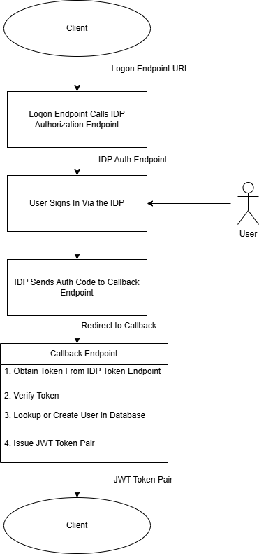
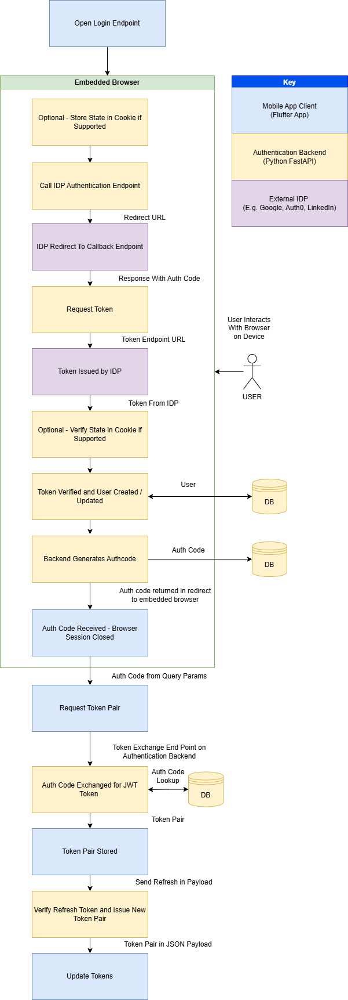
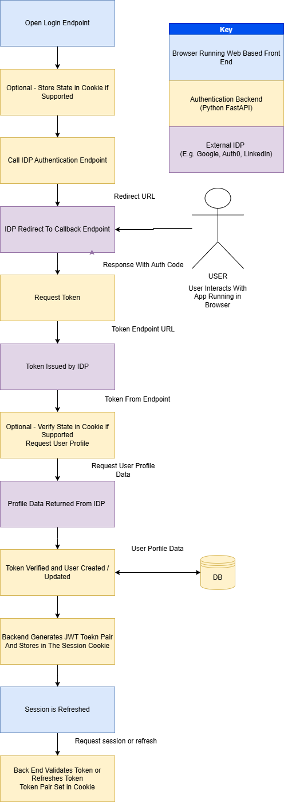
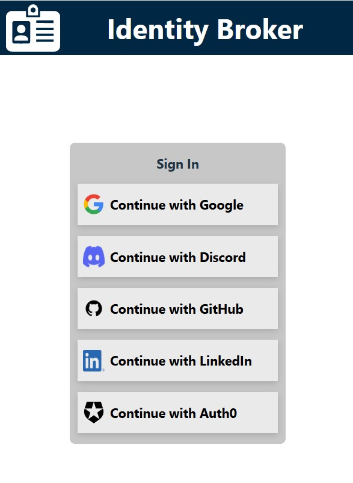

About

The Identity Broker project is a custom-built authentication service designed to centralise and manage authentication for multiple applications. Instead of each application implementing its own login logic, the broker acts as a secure intermediary between client applications and identity providers. It manages authentication flows, session handling, and token validation, providing a consistent and secure method for users to sign in across different services.
The system was designed with flexibility in mind, supporting modern authentication patterns used by both web and mobile applications. Particular attention was given to handling redirect-based login flows, secure cookie management, and token validation to ensure sessions remain protected while maintaining a smooth user experience. By separating authentication from the application layer, the project demonstrates how identity services can be modularised, making future integrations easier and improving overall security architecture.

Authentication Flow

This project implements an OAuth-based authentication flow where the Identity Broker acts as an intermediary between the client application and an external identity provider. The broker manages the redirection process, exchanges the authorization code for tokens, retrieves user information, and then issues its own JSON Web Token (JWT). This allows applications to rely on a consistent authentication mechanism without needing to integrate directly with individual identity providers.
-
The client application initiates authentication by sending a request to
/auth/{provider}/loginon the Identity Broker. - The broker redirects the user to the selected identity provider's login page where the user enters their credentials and authorises the application.
-
After successful authentication, the provider redirects the user back to
/auth/{provider}/callbackon the broker along with an authorization code. - The broker exchanges the authorization code, retrieves the user's details using and then generates and returns a JWT token pair which the client application can use for authenticated requests.
The Challenge
The challenge I ran into is handling mobile and web authentication flows.
I built both a web based front end and an Android app to demonstrate the client interaction with the identity broker. The challenge is that the client behaves in different ways depending on whether it is through the browser or the Android app.
Mobile App Behaviour
I have built the Android app using the Flutter framework. This utiilises the FlutterWebAuth2 plugin which makes the call to the login endpoint in the FastAPI backend.
The FlutterWebAuth2 plugin cannot obtain the JWT pair from response if it is sent in the session cookie. This therefore requires a different solution where I create my own authorization code and send it back to the client in the query parameters of the response. The Android app uses a custom scheme to receive redirects so the back end needs to use that URL to redirect back to the Android app.
The Android app now needs to exchange the authorization code for a JWT token pair which it receives from the back end as a JSON payload. Then the Android app can store the token pair.
Browser Behaviour
The React front end app which runs from within the browser stores the JWT tokens inside a session cookie. This requires the session cookie to be set that contains the back end issued JWT tokens (access token and refresh).
The browser extracts the tokens from the cookie and calls the backend endpoints to refresh or issues new tokens.
Mobile Device Authentication Flow

- The Android App opens the logon endpoint, passing the redirect URI which is the custom URI scheme the app uses for callback. The FlutterWebAuth2 plugin redirects the user to an embedded browser which makes the call the the backend logon endpoint.
- The logon endpoint creates a state and stores it in the cookie, if the provider supports state.
- The logon endpoint will determine which IDP is requested and redirect to the IDP's authorisation endpoint.
- The User interacts with the browser session on the device to sign into their chosen IDP. And the IDP redirects to the back end token exchange endpoint with the authorization code.
- The authorization code is sent from the token exchange endpoint to the IDP for exchange with a token.
- The token is processed by the back end. At this stage the state is checked to be consistent with the state sent if it was supported by the IDP. If there is a mismatch the backend will return a HTTP 401 status error.
- The back end will make a request to the IDPs endpoint for obtaining the user profile data. This is the used to validate the user and will then either retrieve the existing user or create a new user in the database.
- The backend will now generate an authentication code which is a v4 UUID and store it in the database. Then it is sent back in the response as a query parameter.
- The App will read the authentication code and send it to the backend token exchange endpoint.
/auth/exchangecodeforjwt - The back end retrieves the auth code from the database, checks that it hasn't expired and generates a token pair to send back as a JSON payload to the mobile app.
- The app stores the token pair in secure storage.
-
The app subsequently makes calls to the
auth/sessionandauth/refreshendpoints. Tokens are reissued by the refresh endpoint and sent back to the mobile client as a JSON payload. - The Android app updates the tokens.
Browser Authentication Flow

The web based auth flow is a lot more simplistic as the tokens are stored in the session cookie and the app only needs to obtain the session from the backend.
- The browser opens the logon endpoint for the selected IDP.
- The state is stored within the cookie if state is supported by the IDP.
- The backend calls the IDP authentication endpoint.
- The user interacts with their chosen IDP sign-in and consent page.
- The IDP redirects to the backend token exchange endpoint which requests the token from the IDP.
- The IDP returns an access token to the backend.
- The backend checks the state if supported.
- The backend requests the use profile data from the IDP.
- The token is validated based on the response and the user data is stored or retrieved from the database
- The backend retrieves or creates the user in the database and sets the profile data which is encoded in the session cookie. The session cookie is set in the browser.
- The client requests the session and tries the refresh endpoint if the access token has expired.
Project Structure
.
├── main.py
│
├── auth
│ ├── routes.py
│ └── token.py
│
├── config
│
├── data
│ ├── db.py
│ ├── db_actions.py
│ ├── db_setup.py
│ ├── models.py
│ └── schemas.py
│
├── providers
│ ├── auth0_provider.py
│ ├── base_provider.py
│ ├── discord_provider.py
│ ├── github_provider.py
│ ├── google_provider.py
│ ├── linkedin_provider.py
│ ├── provider_registry.py
│ └── spotify_provider.py
| |__ providers.json
│
├── static
│ └── idp
│ ├── auth0-icon-logo.svg
│ ├── Discord-Symbol-Blurple.png
│ ├── g-logo.png
│ ├── GitHub_Invertocat_Black_Clearspace.png
│ ├── Google__G__logo.svg
│ ├── LI-In-Bug.png
│ └── Primary_Logo_Green_RGB.svg
│
└── utils
└── app_utils.py
Main
main.py sets up the environment and directs to the auth routes where are where the endpoints are defined.
Auth
The auth folder contains route.py which holds the routes for the endpoint URLs. This defines the URL paths that are processed by the RestAPI.
token.py contains functions which are for generating and verifying the JWT tokens that are issued by the backend.
Data
This contains files which manage the database.
models.py defines the models (tables) for the database. There is a table to users, authcodes and feedback which is just used to store the feedback responses as a proof of concept.
db_actions.py defines the functions that perform the create, update and delete (CRUD) actions.
Note: An oversight was creating these as static methods. A future improvement would be to make them class methods for a cleaner way of making the calls to the database actions.schemas.py contains the schemas for objects which are returned by the FastAPI endpoint. These are Pydantic models.
Providers
Providers has a base class which defines a provider. There is a .py file for every provider.
Each provider file overrides the following methods. This is because the behaviour can be different depending on the provider so there are differences in how the IDP's requests and responses are handled.
- get_auth_url - Returns the auth URL specific to the IDP.
- exchange_code - Exchanges the auth code for a token issued by the provider.
- get_user_info - Retrieves the user information from the provider.
rovider_registry.py defines the get_provider function that is used to create an instance of the provider depending on the IDP name.
providers.json is a helper for defining the provider, it's ID and media location so they can be returned in the auth/providers endpoint
Static
This is where the media assets are stored and hosted so that the front end can retrieve the logos for each IDP.
Utils
The app_utils.py file contains helper methods used by the FastAPI code.
Login Endpoint
The logon endpoint takes query parameters "redirect_uri" and "set_cookie". These are optional. The set_cookie parameter is used to differentiate between the mobile authentication flow and the browser based flow. The value is encoded within the state data and stored in the cookie.
The provider is retrieved which has a method to get the authorization URL.
If there is a redirect URI then it will be encoded within the state data. This is to allow redirection when using a non-web based client.
The state data is set within a cookie so that it can be retrieved when the callback url is called.
The auth url is obtained and a redirect response is returned. This will require the user to sign in to the provider from their device or browser.
@router.get("/{provider}/login")
async def login(provider: str,redirect_uri: str | None = Query(None),set_cookie : bool = Query(True)):
"""
Performs the login to the IDP using their authorisation endpoint. It then redirects to the token exchange endpoint.
Example: https://localhost:8000/auth/linkedin/login
"""
idp = get_provider(provider)
# Generate secure state
if(redirect_uri):
#Check on allowed redirects list
if redirect_uri not in ALLOWED_REDIRECTS :
print("REDIRECT NOT AUTHORIZED")
return RedirectResponse(f"{redirect_uri}?error=unauthorised")
#The redirect uri is encoded in the state data, this is for redirects from different clients, e.g. android, web
state_data = {
"csrf": str(uuid.uuid4()),
"redirect_uri": redirect_uri,
"set_cookie" : set_cookie
}
state = base64.urlsafe_b64encode(json.dumps(state_data).encode()).decode()
auth_url = await idp.get_auth_url(state)
# Redirect browser immediately
response = RedirectResponse(auth_url)
# Store state in a cookie
response.set_cookie(
key=f"oauth_state_{provider}",
value=state,
httponly=True,
secure=True,
samesite="none"
)
return response
Callback Endpoint
The IDP redirects to this URL the code and optional state
The provider is retrieved which has methods to exchange the code for a token and then retrieve the user profile.
The state is checked if it exists and a 401 error returned if it doesn't match.
An access token is obtained from the IDP and then used to retrieve the user profile.
User profile data is used to create or fetch a user record from the database.
We then obtain the JWT token pair for issue to the client.
The function branches depending on the set_cookie variable which is read from the encoded state. If it is true then we are setting the cookie to allow the browser app to authenticate using the token.
If we are not setting the cookie then the mobile authentication flow is handled. This involves creating an auth code which is stored in the local database and sent back to the client.
This completes the authentication flow for browser sign-ins, but for mobile devices another stage is required
@router.get("/{provider}/callback", response_model=str)
async def auth_callback_with_redirect(request: Request, provider: str, code: str, state: str | None = Query(None)):
"""
Handles the callback from the IDP
1. Takes the code from the payload and exchanges it for a token
2. The token is verified and the user profile data returned
3. User profile data is stored in the database
4. JWT token is issued and set within the session cookie
"""
idp = get_provider(provider)
#Handle the state if it is in the payload
stored_state = request.cookies.get(f"oauth_state_{provider}")
if state:
print("STATES", stored_state, state)
if stored_state != state:
raise HTTPException(status_code=401,detail="Invalid state")
#Check for redirect URI in stored_state
state_data = json.loads(base64.urlsafe_b64decode(stored_state).decode())
redirect_uri = state_data.get("redirect_uri")
set_cookie = state_data.get("set_cookie")
print("REDIRECT URI IS ", redirect_uri, set_cookie)
#State is passed in as some providers need to pass it to the token endpoint
access_token = await idp.exchange_code(code, state)
#Verify the token and return the user profile data
user_profile = await idp.get_user_info(access_token)
# database logic here
user_record = await get_or_add_user(str(user_profile["id"]),provider,None,user_profile['email'])
if not user_record:
raise HTTPException(
status_code=400,
detail="Failed to create the user"
)
#Issue a JWT
jwt_token_pair = obtain_jwt_pair(str(user_record["id"]),user_record["idp"], user_record["alias"], user_record["terms_accepted"])
#Set the redirect URI depending on whether it exists in the cookie set to default if not in cookie
response_redirect_uri = redirect_uri if redirect_uri else os.environ.get("CLIENT_REDIRECT_URI")
#Divert flow depending on whether delivering tokens in cookie or sending auth code
if set_cookie:
response = RedirectResponse(
url=response_redirect_uri,
status_code=302
)
# Access token cookie
response.set_cookie(
key="access_token",
value=jwt_token_pair["access"],
httponly=True,
secure=True, # HTTPS only
samesite="none",
max_age=ACCESS_TOKEN_LIFETIME,
)
# Refresh token cookie
response.set_cookie(
key="refresh_token",
value=jwt_token_pair["refresh"],
httponly=True,
secure=True,
samesite="none",
max_age=REFRESH_TOKEN_LIFETIME,
)
else :
#Generate an auth code
auth_code = await create_auth_code(user_record["id"])
response = RedirectResponse(
url= f"{response_redirect_uri}?code={auth_code.code}",
status_code=302
)
return response
Mobile Device Flow - Auth Code Exchange
This endpoint function takes the auth code from within the JSON payload and validates the auth code.
If the code is valid then the user profile is returned. A JWT pair is created and sent back to the client as JSON data in the response.
During the validation process the auth code is marked as used so that it cannot be used again.
This completes the mobile login flow.
@router.post("/exchangeauthcodeforjwt", response_model=TokenSchema)
async def exchange_auth_code_for_jwt(auth_code : AuthCodeSchema):
"""
This endpoint is called by the client to exchange an auth code for a JWT token and return the response as Json
This is designed to support authorisation flows where there isn't an option of setting an authorisaton cookie
"""
#Get the user from the database if the code is valid
user = await validate_auth_code(auth_code.auth_code)
if not user:
raise HTTPException(status_code=401,detail="Authorisation code is invalid")
jwt_token_pair = obtain_jwt_pair(user.id, user.idp, user.alias, user.terms_accepted)
response = TokenSchema(
access_token = jwt_token_pair['access'],
refresh_token = jwt_token_pair['refresh'],
)
return response
Obtaining the Session
The auth/session endpoint is used by the client to check that the token is still valid. If successful then it will return the user profile in the json payload.
If the token is not valid then it will return an error which tells the client to retry the refresh endpoint.
@router.get("/session", response_model=UserProfileSchema)
async def get_session(token_data = Depends(validate_jwt)):
response = UserProfileSchema(
id=token_data["user_id"],
idp= token_data["idp"],
accepted_terms = token_data["accepted_terms"],
alias=token_data["alias"]
)
return response
Token Refresh
The refresh endpoint attempts to validate the refresh token.
If the token is not valid then it will return an error which tells the client to retry the refresh endpoint.
If successful then the cookies are set with the new token pair and the token pair is also returned in the JSON response.
@router.post("/refresh")
async def refresh_jwt(request: Request, response: Response, refresh: Optional[RefreshTokenSchema], set_cookie : bool = Query(True)):
"""
Takes the refresh token and issues a new token pair and sets the session cookie
"""
# Fallback to cookie (browser clients)
if not refresh.token:
refresh_token = request.cookies.get("refresh_token")
else:
refresh_token = refresh.token
try:
jwt_token_pair = refresh_jwt_pair(refresh_token)
except RefreshTokenExpiredError as e:
print("Refresh token expired", e)
raise HTTPException(status_code=401, detail="Refresh token expired")
except InvalidRefreshTokenError as e:
print("Refresh token invalid", e)
raise HTTPException(status_code=401, detail="Refresh token invalid")
# Set new cookies
if set_cookie:
response.set_cookie(
key="access_token",
value=jwt_token_pair["access"],
httponly=True,
secure=True,
samesite="none",
max_age=ACCESS_TOKEN_LIFETIME
)
response.set_cookie(
key="refresh_token",
value=jwt_token_pair["refresh"],
httponly=True,
secure=True,
samesite="none",
max_age=REFRESH_TOKEN_LIFETIME
)
return {"status": "refreshed"}
token_pair = TokenSchema(
access_token = jwt_token_pair['access'],
refresh_token = jwt_token_pair['refresh'],
)
return token_pair
Token Validation
The validate_jwt function is designed to read the token from the authorization header. If it fails then it falls back to reading the token from the cookie. This is so that both mobile and browser flows work. The mobile device has to send the token in the header as it cannot retain the cookie.
This function will return errors if for different states of invalid tokens.
async def validate_jwt(request: Request):
token = None
# 1. Try Authorization header (mobile/API clients)
auth_header = request.headers.get("Authorization")
if auth_header and auth_header.startswith("Bearer "):
token = auth_header.split(" ")[1]
# 2. Fallback to cookie (browser clients)
if not token:
token = request.cookies.get("access_token")
if not token:
raise HTTPException(status_code=401, detail="Authentication token missing.")
try:
payload = jwt.decode(token, os.environ.get("SECRET_KEY"), algorithms=[ALGORITHM])
except ExpiredSignatureError:
raise HTTPException(status_code=401, detail="Token has expired.")
except InvalidAudienceError:
raise HTTPException(status_code=401, detail="Invalid audience.")
except InvalidSignatureError:
raise HTTPException(status_code=401, detail="Invalid token signature.")
except Exception:
raise HTTPException(status_code=401, detail="Invalid token.")
return payload
The refresh_jwt_pair function validates the JWT token and if successful it will make a call to obtain_jwt_pair. This completes the cycle allowing the refresh endpoint to then issue the new token pair.
def refresh_jwt_pair(refresh_token: str):
try:
payload = jwt.decode(
refresh_token,
os.environ.get("SECRET_KEY"),
algorithms=[ALGORITHM]
)
# Ensure this is a refresh token
if payload.get("type") != "refresh":
raise Exception("Invalid token type")
user_id = payload.get("user_id")
# If you stored these in the refresh token (recommended)
alias = payload.get("alias")
idp = payload.get("idp")
accepted_terms = payload.get("accepted_terms")
# Generate new tokens
return obtain_jwt_pair(user_id, idp, alias, accepted_terms)
except jwt.ExpiredSignatureError:
raise RefreshTokenExpiredError("Refresh token expired")
except jwt.InvalidTokenError:
raise InvalidRefreshTokenError("Invalid refresh token")
Sign Out
Sign out is handled at the backend by deleting the cookies. This is for the browser based authentication flow only. When the cookies are deleted the browser client is forced to sign out.
@router.post("/logout")
def logout(response: Response):
"""
Logs out the user by clearing the Cookies
"""
response.delete_cookie(
key="access_token",
path="/",
secure=True,
samesite="none",
)
response.delete_cookie(
key="refresh_token",
path="/",
secure=True,
samesite="none",
)
return {"status": "logged_out"}
Accept Terms and Conditions
I have incorporated the acceptance of the terms and conditions into the authentication flow.
The terms and conditions acceptance is held within the user profile. The session endpoint will return a cookie with this value encoded. When the client reads the acceptance value it can redirect to a page within the application to enable the user to accept the terms and conditions.
The acceptterms endpoint below will update the database with the acceptance and set a new token pair with the updated user profile encoded. The cookie needs to be set again and the data returned for the mobile client.
@router.post("/acceptterms", response_model=UserProfileSchema)
async def accept_terms(response: Response, set_cookie : bool = Query(True), token_data = Depends(validate_jwt)):
"""
Accepts the terms and conditions in the database and then updates the token
"""
try:
await update_terms_accepted(token_data["user_id"])
except Exception as e:
raise HTTPException(status_code=400, detail="Unable to update the terms and conditions.")
#Issue a new JWT with the updated accepted terms
jwt_token_pair = obtain_jwt_pair(token_data["user_id"], token_data["idp"], token_data["alias"], True)
# Set new cookies
if set_cookie:
response.set_cookie(
key="access_token",
value=jwt_token_pair["access"],
httponly=True,
secure=True,
samesite="none",
max_age=ACCESS_TOKEN_LIFETIME
)
response.set_cookie(
key="refresh_token",
value=jwt_token_pair["refresh"],
httponly=True,
secure=True,
samesite="none",
max_age=REFRESH_TOKEN_LIFETIME
)
return UserProfileSchema(
id=token_data["user_id"],
idp= token_data["idp"],
accepted_terms = True,
alias=token_data["alias"]
)
The React Frontend

To demonstrate this application, I have built a front end web app using the React Framework (JavaScript).
The app is designed to do the following:
- Handle the token refresh lifecycle
- If the token is not valid then to redirect the user to the sign in page
- If the user is authenticated then it displays a profile page and the option to leave feedback
To see this demonstration, the app can be accessed here.
React Token Refresh Cycle
In the App.jsx file the code uses the useEffect hook to handle the token refresh cycle. It does the following:
- It makes a call to the backend to obtain the session. If successful it sets the profile which triggers the display to present the authenticated content.
- If unauthorized, it will attempt a token refresh.
- If the refresh is successful then it will make another call to the session and load the profile.
- If unauthorized then the user is redirected to the sign in page where the IDP list is displayed.
To see the full code for the front end please visit my Git Hub Repository.
useEffect(() => {
getSession().then((res) => {
//Set loaded, profile and authenticated
setLoadingSession(false);
setAuthenticated(true);
setProfile(res);
}).catch(err => {
if(err.response.status === 401) {
//Try refresh
refresh().then( async (res) => {
const profile = await getSession();
setProfile(profile);
setLoadingSession(false);
setAuthenticated(true);
}).catch(async err => {
if(err.response.status === 401) {
//Re-authentication required
setLoadingSession(false);
setAuthenticated(false);
//Authentication has failed so the user needs to sign in
try {
const idpList = await getIdpList();
setIdps(idpList);
} catch(err) {
console.error("An error occurred retrieving the IDP list.", err);
}
}
});
}
});
}, [sessionRefresh])